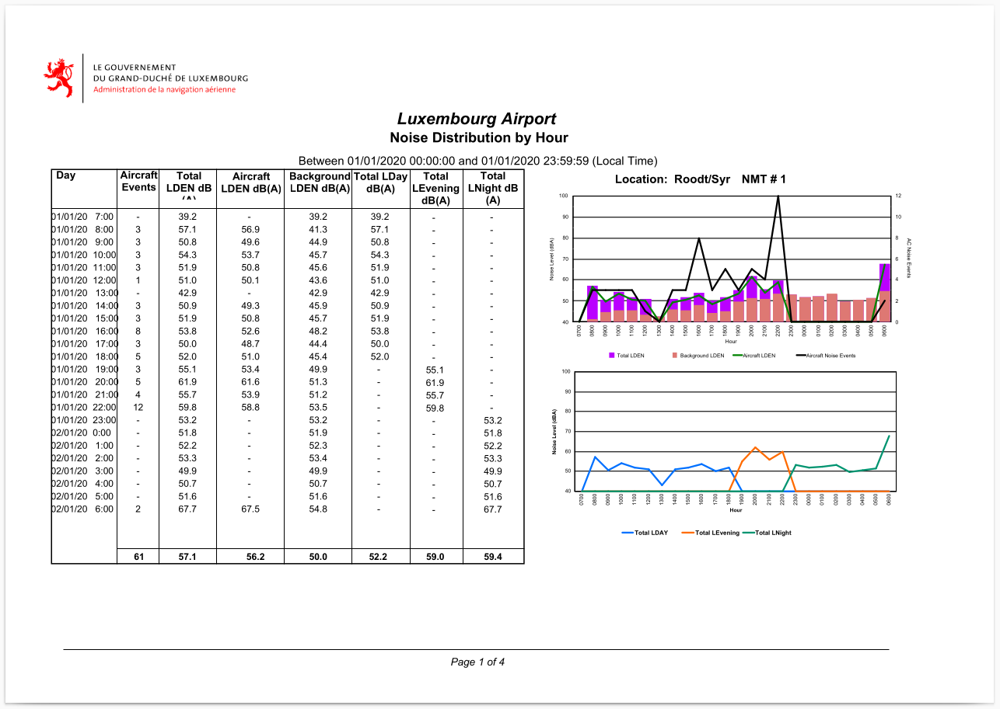
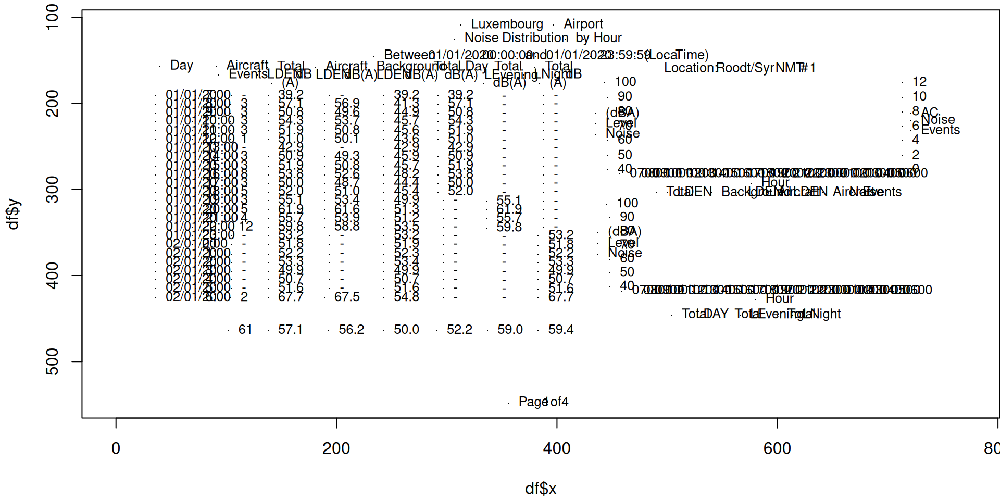
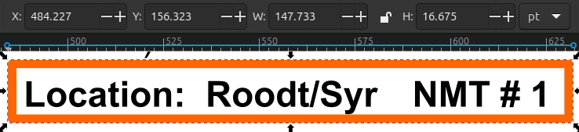
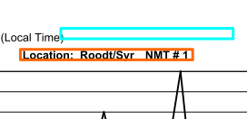
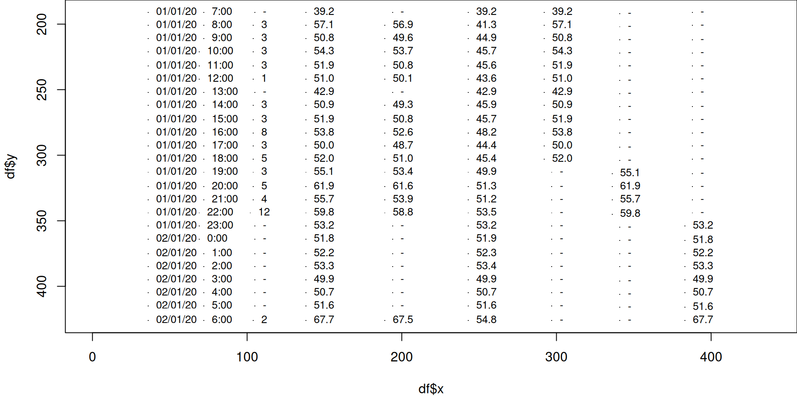
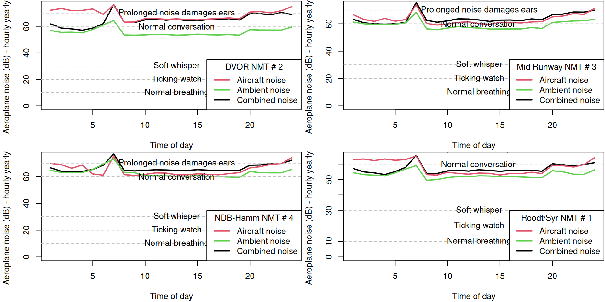
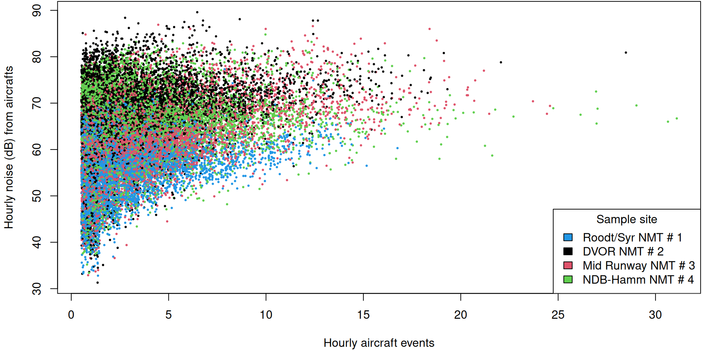

Parsing PDFs
Strategies (with R)
Cyrille Médard de Chardon
Problem: 12,200+ pages (over 8 years of data)
Administration de la Navigation Aérienne
One solution (using R)
library (pdftools)<- pdf_data ('imgs/2020-byhour_page1.pdf' )print (all_pdf[[1 ]])
width height x y space text
1 79 14 313 109 TRUE Luxembourg
2 43 14 397 109 FALSE Airport
3 30 12 307 125 TRUE Noise
4 63 12 341 125 TRUE Distribution
5 13 12 408 125 TRUE by
6 26 12 424 125 FALSE Hour
7 36 10 234 145 TRUE Between
8 47 10 274 145 TRUE 01/01/2020
9 36 10 323 145 TRUE 00:00:00
10 15 10 362 145 TRUE and
11 47 10 381 145 TRUE 01/01/2020
12 36 10 430 145 TRUE 23:59:59
13 25 10 470 145 TRUE (Local
14 24 10 498 145 FALSE Time)
15 14 8 138 464 FALSE 57.1
16 14 8 193 464 FALSE 56.2
17 14 8 243 464 FALSE 50.0
18 14 8 291 464 FALSE 52.2
19 14 8 337 464 FALSE 59.0
20 14 8 383 464 FALSE 59.4
21 19 9 356 548 TRUE Page
22 4 9 378 548 TRUE 1
23 7 9 385 548 TRUE of
24 4 9 395 548 FALSE 4
25 4 9 701 282 FALSE 0600
26 4 9 691 282 FALSE 0500
27 4 9 680 282 FALSE 0400
28 4 9 670 282 FALSE 0300
29 4 9 659 282 FALSE 0200
30 4 9 648 282 FALSE 0100
31 4 9 637 282 FALSE 0000
32 4 9 627 282 FALSE 2300
33 4 9 616 282 FALSE 2200
34 4 9 605 282 FALSE 2100
35 9 4 576 293 FALSE Hour
36 9 4 490 304 TRUE Total
37 11 4 500 304 FALSE LDEN
38 22 4 540 304 TRUE Background
39 11 4 564 304 FALSE LDEN
40 13 4 591 304 TRUE Aircraft
41 11 4 605 304 FALSE LDEN
42 13 4 641 304 TRUE Aircraft
43 10 4 656 304 TRUE Noise
44 12 4 668 304 FALSE Events
45 7 4 445 317 FALSE 100
46 4 4 448 333 FALSE 90
47 4 4 448 349 FALSE 80
48 4 4 448 365 FALSE 70
49 4 4 448 381 FALSE 60
50 9 4 580 428 FALSE Hour
51 11 5 552 446 TRUE Total
52 22 5 566 446 FALSE LEvening
53 11 5 600 446 TRUE Total
54 15 5 614 446 FALSE LNight
55 4 9 705 418 FALSE 0600
56 4 9 694 418 FALSE 0500
57 4 9 684 418 FALSE 0400
58 4 9 673 418 FALSE 0300
59 4 9 663 418 FALSE 0200
60 4 9 651 418 FALSE 0100
61 4 9 641 418 FALSE 0000
62 4 9 630 418 FALSE 2300
63 4 9 620 418 FALSE 2200
64 4 9 609 418 FALSE 2100
65 4 9 598 418 FALSE 2000
66 4 9 587 418 FALSE 1900
67 4 9 577 418 FALSE 1800
68 4 9 566 418 FALSE 1700
69 4 9 555 418 FALSE 1600
70 4 9 544 418 FALSE 1500
71 4 9 533 418 FALSE 1400
72 4 9 523 418 FALSE 1300
73 4 9 512 418 FALSE 1200
74 4 4 448 413 FALSE 40
75 4 9 501 418 FALSE 1100
76 4 4 448 397 FALSE 50
77 11 5 504 446 TRUE Total
78 13 5 517 446 FALSE LDAY
79 8 8 102 464 FALSE 61
80 4 9 595 282 FALSE 2000
81 2 4 713 277 FALSE 0
82 4 9 584 282 FALSE 1900
83 4 4 446 277 FALSE 40
84 4 9 574 282 FALSE 1800
85 2 4 713 261 FALSE 2
86 4 9 563 282 FALSE 1700
87 4 4 446 261 FALSE 50
88 4 9 553 282 FALSE 1600
89 2 4 713 243 FALSE 4
90 4 9 542 282 FALSE 1500
91 4 4 446 243 FALSE 60
92 4 9 531 282 FALSE 1400
93 2 4 713 227 FALSE 6
94 4 9 521 282 FALSE 1300
95 4 4 446 227 FALSE 70
96 4 9 509 282 FALSE 1200
97 2 4 713 210 FALSE 8
98 4 9 499 282 FALSE 1100
99 4 4 446 210 FALSE 80
100 4 9 488 282 FALSE 1000
101 4 4 713 193 FALSE 10
102 4 9 478 282 FALSE 0900
103 4 4 446 193 FALSE 90
104 4 9 490 418 FALSE 1000
105 2 8 388 191 FALSE -
106 2 8 388 201 FALSE -
107 2 8 388 212 FALSE -
108 2 8 388 222 FALSE -
109 2 8 388 232 FALSE -
110 2 8 388 242 FALSE -
111 2 8 388 252 FALSE -
112 2 8 388 263 FALSE -
113 2 8 388 273 FALSE -
114 2 8 388 283 FALSE -
115 2 8 388 293 FALSE -
116 2 8 388 303 FALSE -
117 2 8 388 314 FALSE -
118 2 8 388 324 FALSE -
119 2 8 388 334 FALSE -
120 2 8 388 344 FALSE -
121 14 8 383 354 FALSE 53.2
122 14 8 383 365 FALSE 51.8
123 14 8 383 375 FALSE 52.2
124 14 8 383 385 FALSE 53.3
125 14 8 383 395 FALSE 49.9
126 14 8 383 405 FALSE 50.7
127 14 8 383 416 FALSE 51.6
128 14 8 383 426 FALSE 67.7
129 4 9 480 418 FALSE 0900
130 2 8 341 192 FALSE -
131 2 8 341 202 FALSE -
132 2 8 341 212 FALSE -
133 2 8 341 222 FALSE -
134 2 8 341 232 FALSE -
135 2 8 341 243 FALSE -
136 2 8 341 253 FALSE -
137 2 8 341 263 FALSE -
138 2 8 341 273 FALSE -
139 2 8 341 283 FALSE -
140 2 8 341 294 FALSE -
141 2 8 341 304 FALSE -
142 14 8 336 314 FALSE 55.1
143 14 8 336 324 FALSE 61.9
144 14 8 336 334 FALSE 55.7
145 14 8 336 345 FALSE 59.8
146 2 8 341 355 FALSE -
147 2 8 341 365 FALSE -
148 2 8 341 375 FALSE -
149 2 8 341 385 FALSE -
150 2 8 341 396 FALSE -
151 2 8 341 406 FALSE -
152 2 8 341 416 FALSE -
153 2 8 341 426 FALSE -
154 4 9 467 282 FALSE 0800
155 14 8 292 191 FALSE 39.2
156 14 8 292 201 FALSE 57.1
157 14 8 292 211 FALSE 50.8
158 14 8 292 221 FALSE 54.3
159 14 8 292 232 FALSE 51.9
160 14 8 292 242 FALSE 51.0
161 14 8 292 252 FALSE 42.9
162 14 8 292 262 FALSE 50.9
163 14 8 292 273 FALSE 51.9
164 14 8 292 283 FALSE 53.8
165 14 8 292 293 FALSE 50.0
166 14 8 292 303 FALSE 52.0
167 2 8 297 313 FALSE -
168 2 8 297 324 FALSE -
169 2 8 297 334 FALSE -
170 2 8 297 344 FALSE -
171 2 8 297 354 FALSE -
172 2 8 297 364 FALSE -
173 2 8 297 375 FALSE -
174 2 8 297 385 FALSE -
175 2 8 297 395 FALSE -
176 2 8 297 405 FALSE -
177 2 8 297 415 FALSE -
178 2 8 297 426 FALSE -
179 4 9 457 282 FALSE 0700
180 14 8 243 191 FALSE 39.2
181 14 8 243 201 FALSE 41.3
182 14 8 243 211 FALSE 44.9
183 14 8 243 221 FALSE 45.7
184 14 8 243 232 FALSE 45.6
185 14 8 243 242 FALSE 43.6
186 14 8 243 252 FALSE 42.9
187 14 8 243 262 FALSE 45.9
188 14 8 243 273 FALSE 45.7
189 14 8 243 283 FALSE 48.2
190 14 8 243 293 FALSE 44.4
191 14 8 243 303 FALSE 45.4
192 14 8 243 313 FALSE 49.9
193 14 8 243 324 FALSE 51.3
194 14 8 243 334 FALSE 51.2
195 14 8 243 344 FALSE 53.5
196 14 8 243 354 FALSE 53.2
197 14 8 243 364 FALSE 51.9
198 14 8 243 375 FALSE 52.3
199 14 8 243 385 FALSE 53.4
200 14 8 243 395 FALSE 49.9
201 14 8 243 405 FALSE 50.7
202 14 8 243 415 FALSE 51.6
203 14 8 243 426 FALSE 54.8
204 4 9 469 418 FALSE 0800
205 2 8 194 191 FALSE -
206 14 8 189 201 FALSE 56.9
207 14 8 189 211 FALSE 49.6
208 14 8 189 221 FALSE 53.7
209 14 8 189 232 FALSE 50.8
210 14 8 189 242 FALSE 50.1
211 2 8 194 252 FALSE -
212 14 8 189 262 FALSE 49.3
213 14 8 189 273 FALSE 50.8
214 14 8 189 283 FALSE 52.6
215 14 8 189 293 FALSE 48.7
216 14 8 189 303 FALSE 51.0
217 14 8 189 313 FALSE 53.4
218 14 8 189 324 FALSE 61.6
219 14 8 189 334 FALSE 53.9
220 14 8 189 344 FALSE 58.8
221 2 8 194 354 FALSE -
222 2 8 194 364 FALSE -
223 2 8 194 375 FALSE -
224 2 8 194 385 FALSE -
225 2 8 194 395 FALSE -
226 2 8 194 405 FALSE -
227 2 8 194 415 FALSE -
228 14 8 189 426 FALSE 67.5
229 4 4 713 176 FALSE 12
230 4 9 459 418 FALSE 0700
231 14 8 138 191 FALSE 39.2
232 14 8 138 201 FALSE 57.1
233 14 8 138 211 FALSE 50.8
234 14 8 138 221 FALSE 54.3
235 14 8 138 232 FALSE 51.9
236 14 8 138 242 FALSE 51.0
237 14 8 138 252 FALSE 42.9
238 14 8 138 262 FALSE 50.9
239 14 8 138 273 FALSE 51.9
240 14 8 138 283 FALSE 53.8
241 14 8 138 293 FALSE 50.0
242 14 8 138 303 FALSE 52.0
243 14 8 138 313 FALSE 55.1
244 14 8 138 324 FALSE 61.9
245 14 8 138 334 FALSE 55.7
246 14 8 138 344 FALSE 59.8
247 14 8 138 354 FALSE 53.2
248 14 8 138 364 FALSE 51.8
249 14 8 138 375 FALSE 52.2
250 14 8 138 385 FALSE 53.3
251 14 8 138 395 FALSE 49.9
252 14 8 138 405 FALSE 50.7
253 14 8 138 415 FALSE 51.6
254 14 8 138 426 FALSE 67.7
255 4 10 435 236 TRUE Noise
256 4 10 435 224 TRUE Level
257 4 10 435 212 FALSE (dBA)
258 2 8 105 191 FALSE -
259 4 8 104 201 FALSE 3
260 4 8 104 211 FALSE 3
261 4 8 104 221 FALSE 3
262 4 8 104 232 FALSE 3
263 4 8 104 242 FALSE 1
264 2 8 105 252 FALSE -
265 4 8 104 262 FALSE 3
266 4 8 104 273 FALSE 3
267 4 8 104 283 FALSE 8
268 4 8 104 293 FALSE 3
269 4 8 104 303 FALSE 5
270 4 8 104 313 FALSE 3
271 4 8 104 324 FALSE 5
272 4 8 104 334 FALSE 4
273 8 8 102 344 FALSE 12
274 2 8 105 354 FALSE -
275 2 8 105 364 FALSE -
276 2 8 105 375 FALSE -
277 2 8 105 385 FALSE -
278 2 8 105 395 FALSE -
279 2 8 105 405 FALSE -
280 2 8 105 415 FALSE -
281 4 8 104 426 FALSE 2
282 42 10 488 160 TRUE Location:
283 44 10 535 160 TRUE Roodt/Syr
284 20 10 589 160 TRUE NMT
285 5 10 612 160 TRUE #
286 5 10 620 160 FALSE 1
287 7 4 443 176 FALSE 100
288 4 5 721 212 TRUE AC
289 4 10 721 220 TRUE Noise
290 4 12 721 232 FALSE Events
291 29 8 36 191 TRUE 01/01/20
292 14 8 72 191 FALSE 7:00
293 29 8 36 201 TRUE 01/01/20
294 14 8 72 201 FALSE 8:00
295 29 8 36 211 TRUE 01/01/20
296 14 8 72 211 FALSE 9:00
297 29 8 36 221 TRUE 01/01/20
298 18 8 69 221 FALSE 10:00
299 29 8 36 232 TRUE 01/01/20
300 18 8 69 232 FALSE 11:00
301 29 8 36 242 TRUE 01/01/20
302 18 8 69 242 FALSE 12:00
303 29 8 36 252 TRUE 01/01/20
304 18 8 72 252 FALSE 13:00
305 29 8 36 262 TRUE 01/01/20
306 18 8 72 262 FALSE 14:00
307 29 8 36 273 TRUE 01/01/20
308 18 8 72 273 FALSE 15:00
309 29 8 36 283 TRUE 01/01/20
310 18 8 72 283 FALSE 16:00
311 29 8 36 293 TRUE 01/01/20
312 18 8 72 293 FALSE 17:00
313 29 8 36 303 TRUE 01/01/20
314 18 8 72 303 FALSE 18:00
315 29 8 36 313 TRUE 01/01/20
316 18 8 72 313 FALSE 19:00
317 29 8 36 324 TRUE 01/01/20
318 18 8 72 324 FALSE 20:00
319 29 8 36 334 TRUE 01/01/20
320 18 8 72 334 FALSE 21:00
321 29 8 36 344 TRUE 01/01/20
322 18 8 69 344 FALSE 22:00
323 29 8 36 354 TRUE 01/01/20
324 18 8 69 354 FALSE 23:00
325 29 8 36 364 TRUE 02/01/20
326 14 8 69 364 FALSE 0:00
327 29 8 36 375 TRUE 02/01/20
328 14 8 72 375 FALSE 1:00
329 29 8 36 385 TRUE 02/01/20
330 14 8 72 385 FALSE 2:00
331 29 8 36 395 TRUE 02/01/20
332 14 8 72 395 FALSE 3:00
333 29 8 36 405 TRUE 02/01/20
334 14 8 72 405 FALSE 4:00
335 29 8 36 415 TRUE 02/01/20
336 14 8 72 415 FALSE 5:00
337 29 8 36 426 TRUE 02/01/20
338 14 8 72 426 FALSE 6:00
339 30 9 91 157 FALSE Aircraft
340 20 9 380 158 FALSE Total
341 20 9 137 158 FALSE Total
342 49 9 227 158 TRUE Background
343 20 9 279 158 TRUE Total
344 20 9 301 158 TRUE LDay
345 20 9 334 158 FALSE Total
346 30 9 181 158 FALSE Aircraft
347 27 9 93 167 TRUE Events
348 23 9 128 167 TRUE LDEN
349 11 9 154 167 TRUE dB
350 23 9 172 168 TRUE LDEN
351 23 9 198 168 TRUE dB(A)
352 23 9 227 168 TRUE LDEN
353 23 9 253 168 FALSE dB(A)
354 38 9 325 168 TRUE LEvening
355 26 9 370 167 TRUE LNight
356 11 9 399 167 FALSE dB
357 23 9 289 168 FALSE dB(A)
358 11 9 384 177 FALSE (A)
359 11 9 141 177 FALSE (A)
360 23 9 333 177 FALSE dB(A)
361 4 11 437 375 TRUE Noise
362 4 10 437 363 TRUE Level
363 4 11 437 350 FALSE (dBA)
364 15 9 40 157 FALSE Day
How is the data structured?
The origin here is in the top left. PDFs have nested boxes that can be rotated - origin can be elsewhere.

A new problem?
We now have a list of individual words with their Cartesian coordinates.
It’s going to be possible but some work to parse into clean data.
A good strategy would be to break the space into areas of interest, and omit the ‘garbage’.
Attack strategy ‘Fruit Ninja’
Need to determine target bounds!
If only there was a magical program to help us understand the PDF coordinate system.
Inkscape!
The solution, as in most cases, is using Inkscape.
Here to find the the ‘box’ of data that interests us.
By setting the ruler (right-click) or coordinate units to pt (points) you see the same units reported in R.

It’s not perfect
PDFs use points, which are defined as 1/72 of an inch.
Below shows the offset between the expected location coordinates and the actual.

With a little tweaking, it works

There’s another problem
Text on a line - is not on the exact same y coordinate.
width height x y space text
305 29 8 36 262 TRUE 01/01/20
306 18 8 72 262 FALSE 14:00
265 4 8 104 262 FALSE 3
238 14 8 138 262 FALSE 50.9
212 14 8 189 262 FALSE 49.3
187 14 8 243 262 FALSE 45.9
162 14 8 292 262 FALSE 50.9
137 2 8 341 263 FALSE -
112 2 8 388 263 FALSE -
We can cluster the y-coordinate values, but it’s helpful if we know the number of rows.
Results
Table of value frequencies (abridged), before classification/clustering:
191 192 201 202 211 212 221 222 232 242 243 252 253 262 263 273 283
8 1 8 1 7 2 7 2 9 8 1 8 1 7 2 9 9
After (abridged):
191 201 211 221 232 242 252 262 273 283 293 303 313 324 334 344 354
9 9 9 9 9 9 9 9 9 9 9 9 9 9 9 9 9
The rows (y coordinates) have been harmonized.
We now have cleaned data.
date hour ac_events total_LDEN_dB ac_LDEN_dB bg_LDEN_dB
191 01/01/20 7:00 - 39.2 - 39.2
201 01/01/20 8:00 3 57.1 56.9 41.3
211 01/01/20 9:00 3 50.8 49.6 44.9
221 01/01/20 10:00 3 54.3 53.7 45.7
232 01/01/20 11:00 3 51.9 50.8 45.6
242 01/01/20 12:00 1 51.0 50.1 43.6
252 01/01/20 13:00 - 42.9 - 42.9
262 01/01/20 14:00 3 50.9 49.3 45.9
273 01/01/20 15:00 3 51.9 50.8 45.7
283 01/01/20 16:00 8 53.8 52.6 48.2
293 01/01/20 17:00 3 50.0 48.7 44.4
303 01/01/20 18:00 5 52.0 51.0 45.4
313 01/01/20 19:00 3 55.1 53.4 49.9
324 01/01/20 20:00 5 61.9 61.6 51.3
334 01/01/20 21:00 4 55.7 53.9 51.2
344 01/01/20 22:00 12 59.8 58.8 53.5
354 01/01/20 23:00 - 53.2 - 53.2
364 02/01/20 0:00 - 51.8 - 51.9
375 02/01/20 1:00 - 52.2 - 52.3
385 02/01/20 2:00 - 53.3 - 53.4
395 02/01/20 3:00 - 49.9 - 49.9
405 02/01/20 4:00 - 50.7 - 50.7
415 02/01/20 5:00 - 51.6 - 51.6
426 02/01/20 6:00 2 67.7 67.5 54.8
The data
“Noise above 70 dB over a prolonged period of time may start to damage your hearing. Loud noise above 120 dB can cause immediate harm to your ears.”CDC
Relationship between events and noise (2020 data)
I’m not sure where the locations are.
Conclusion
Parsing PDFS
Easy to start / getting some data
Extracting boxes works well
Aligning text into rows can be challenging
Data munging is heavy
Overall a nice visual exercise that is methodologically interesting
Next steps
Process the other years of data (2012-2020) ✅
Upload cleaned CSV to data.public.lu ✅
Georeference the sensor locations
Analyze 2012-2020 data